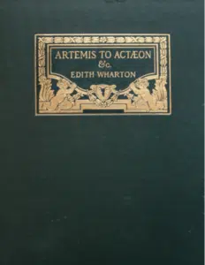

39:58 · 4 OPERE
Le narrative dalle quali non ci si può più scansare.
Il filo del discorso
La metafora di Edith Wharton della candela e dello specchio introduce una riflessione sulla possibilità di conservare autonomia di fronte a narrazioni che chiedono di schierarsi. Dr Divago distingue la semplice distrazione dall’appello emotivo che, a suo giudizio, obbliga ogni persona a partecipare o a rifiutare. Dopo il richiamo a Eraclito, la discussione attraversa comunicazione politica, tecnologia e società di massa. Pandemia, Ucraina e conflitto mediorientale costituiscono gli esempi polemici del relatore. Il ricordo di una conversazione sui Pentagon Papers porta al problema della coerenza e dell’accesso alle fonti della storia politica. Bartleby e l’invito kantiano a usare il proprio intelletto accompagnano la conclusione: il confronto dovrebbe misurarsi con argomenti e documenti, senza ridursi all’appartenenza.
I libri nel discorso

Vesalius in Zante (1564)
Identificazione probabile
Note sul riferimento
Copertina della raccolta che contiene la poesia: Charles Scribner’s Sons · Artemis to Actæon and Other Verse · raccolta 1909
Copertina della raccolta poetica del 1909 documentata da The Mount. La voce identifica la poesia apparsa nel 1902, non l’intera raccolta; nessuna edizione è attribuita al filmato.
Edith Wharton, il 1902 e la metafora della candela e dello specchio identificano probabilmente Vesalius in Zante; titolo non pronunciato.

Pentagon Papers (Report of the Office of the Secretary of Defense Vietnam Task Force)
Note sul riferimento
Prima pagina del fascicolo introduttivo e indice: Rapporto finale del 1969 · fascicolo introduttivo e indice · scansione NARA declassificata nel 2011
Prima pagina del fascicolo introduttivo e indice conservato dai National Archives; non è la copertina di un libro e non riproduce l’intero rapporto. La voce riguarda il corpus documentario.
Pentagon Papers e Daniel Ellsberg sono richiamati e discussi esplicitamente.

Bartleby lo scrivano
Note sul riferimento
Copertina della raccolta: Bompiani · Bartleby lo scrivano e altri racconti · 2018
Copertina della raccolta Bompiani che contiene Bartleby lo scrivano. Non è presentata come copertina di un’edizione autonoma del racconto né come l’esemplare citato nel video.
Melville, Bartleby lo scrivano e la formula del preferire di no sono annunciati.

Risposta alla domanda: che cos’è l’Illuminismo?
Identificazione probabile
Note sul riferimento
Copertina della raccolta che comprende il saggio sull’Illuminismo: Firenze University Press · Sette scritti politici liberi · 2011 · a cura di Maria Chiara Pievatolo
Copertina del volume cartaceo FUP che comprende il saggio, riscontrato dal catalogo universitario. L’ISBN appartiene alla raccolta; il filmato non annuncia un’edizione e il titolo del saggio è un’identificazione probabile della citazione.
Kant e l’invito ad avere il coraggio di usare il proprio intelletto richiamano probabilmente la risposta sull’Illuminismo; titolo non annunciato.